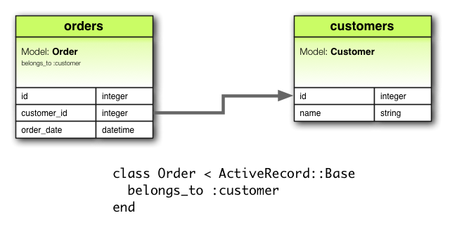
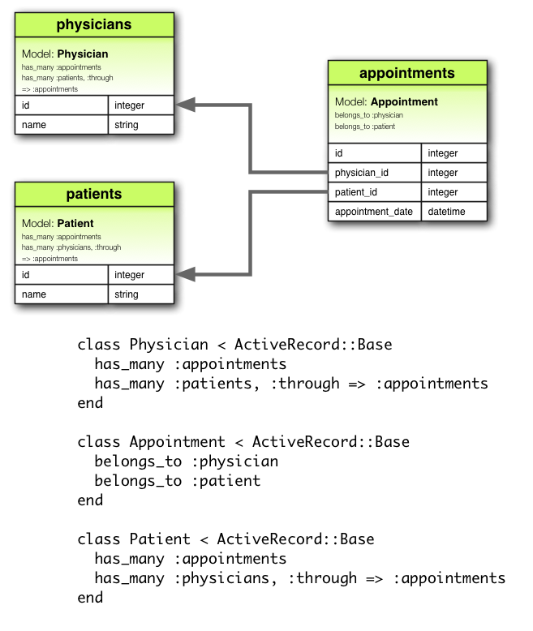

Rails Models and Relationships
The Easy Way to Database
By Kaleb Davis
What is a model?
- Model: Layer of system responsible for representing data and logic
- "M" in Model-View-Controller
Active Record
Rails' way of interacting with the database
Using AR we can:
- Represent models and data
- Represent associations between the created models
- Validate models before the information is saved to the database
- Perform database operations in an object-oriented way
How do I make one?
Naming Conventions:
- Name all models in CamelCase singular form
MyModel- All database tables will be named in snake_case plural form
my_models
Schema Conventions
- Default integer column named
idas primary key - Foreign keys should be named following pattern
singular_table_name_id my_model_id- Optional column names:
created_atupdated_at
class Movie < ActiveRecord::Base
end
Will generate SQL like:
CREATE TABLE movies (
id int(11) NOT NULL auto_increment,
title varchar(255),
PRIMARY KEY (id)
);
But wait...how did that model know it had a title?
Why, from the schema of course!
Migrations: domain-specific language Rails provides for automatically generating a database schema
class CreateMovies < ActiveRecord::Migration
def change
create_table :movies do |t|
t.string :title
t.integer :rating
t.integer :author_id
t.timestamps null: false
end
end
end
Creates a database with a title, rating, foreign key reference to an author, and created_at and updated_at timestamps
You can make validations inside the model to ensure that certain aspects exist and are correct before persisting to the database
class User < ActiveRecord::Base
validates :name, presence: true # needs name to exist
validates :password, length: { in: 8..16 }
# password must be between 8-16 characters long
end
Other validations can be found here
How can I connect models to other models?
Through associations
What is an association?
Association: connection between two Active Record models
Examples
belongs_tohas_onehas_manyhas_many :throughhas_one :throughhas_and_belongs_to_many
belongs_to

has_one

has_many

has_many :through

has_one :through

has_and_belongs_to_many

To read more about Active Record associations, go to the Ruby on Rails Association Basics page